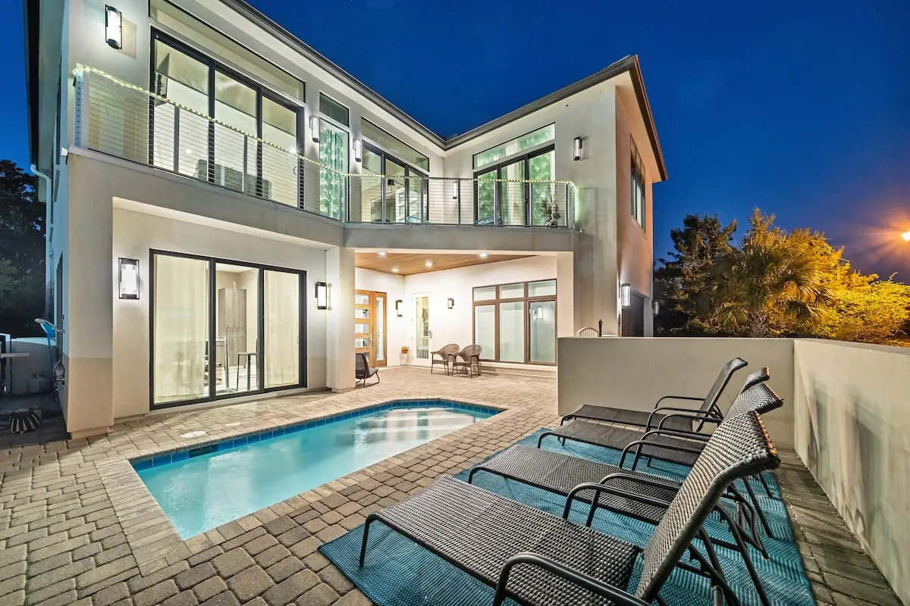
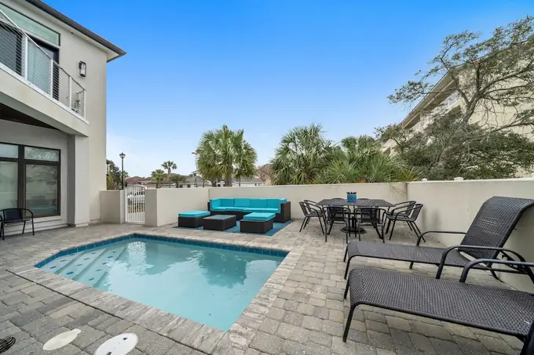
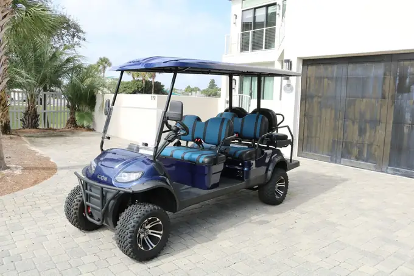

Avalon Beach, Miramar Beach · Est. 2016
Flamingo Destination
Six bedrooms, six baths, a private pool with Gulf views, and a private beach three minutes from the door. Sleeps eighteen. The golf cart comes with it.
Check dates
- Sleeps
- 18
- Bedrooms
- 6
- Baths
- 6
- Pools
- 1
- Flamingos
- ∞
/ The house
Sleeps eighteen without anyone drawing the short straw.
Six bedrooms and six full baths — one each, which is the whole point when three families travel together. Two bunk rooms take the children, so nobody negotiates over a sofa bed.
The courtyard opens onto a private pool with a paved sun deck and Gulf views. Upstairs, a covered balcony runs off the living room. The private beach access is a three-minute walk.
- Private pool
- Gulf views
- Free golf cart
- Free beach service
- Private beach, 3-minute walk
- Two bunk rooms
- Pets welcome
- Community pool and tennis


/ Details
The specifics, without the adjectives.
/ The place
Avalon Beach, on the Emerald Coast.
The stretch of Florida panhandle where the sand is white enough to squeak and the water really is that colour. Private beach access is a three-minute walk, and the neighbourhood throws in a community pool and a tennis court.
Owner’s note goes here — nearest beach access, the walk to dinner, where to park a boat.
/ Gallery
Forty-seven photographs, zero filters.
Select any photograph to open it larger. Arrow keys move through the set; Escape closes it.
/ Book
Dates, rates and checkout live on Beach Reunion.
Flamingo Destination is managed by Beach Reunion, who handle the calendar, the rate for your window and the booking itself. Their listing has live availability.
Sleeps 18 · 6 bedrooms · 6 baths · Pets welcome
Check dates on Beach ReunionOpens the Beach Reunion listing in a new tab.